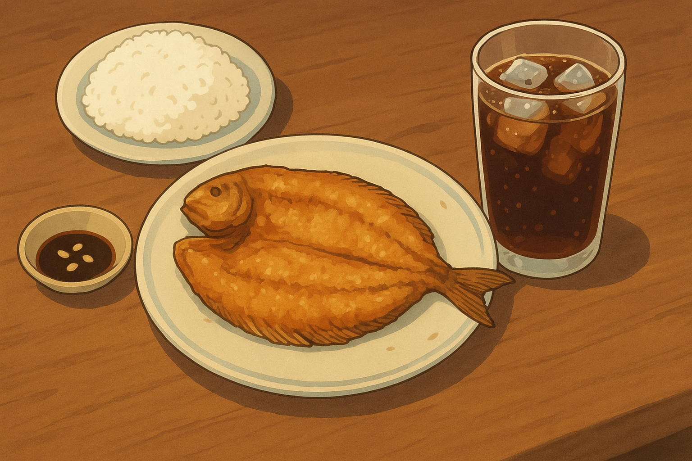

Daing
A simple fish dish, daing is best enjoyed during a hot day by the Philippine seaside, with an ice-cold glass of Coke.

Note: This recipe feeds 2. You may also work with any fish similar to milkfish, like pompano and sea bass.
Ingredients
- 1 medium milkfish (approx. 250g), boneless and butterflied
- 5 cloves garlic, diced
- 500mL white vinegar
- Black pepper, crushed
- Fine salt
- 100mL vegetable oil
Steps
- In a shallow casserole, pour in the vinegar, garlic, and pinches of black pepper and salt.
- Place the fish in the casserole and bathe in the vinegar mix. Let it marinate, flesh facing down, for 20 minutes. Do not marinate for longer to prevent the fish from becoming mushy.
- Heat the oil in a pan on medium heat. Fry the fish, starting with the skin down.
- Once the skin turns crispy and golden brown, flip it until flesh is golden brown, around 5 to 10 minutes.
- Serve hot with white rice and a dipping sauce of soy sauce and calamansi or lime...and, of course, an ice-cold glass of Coke.
Home